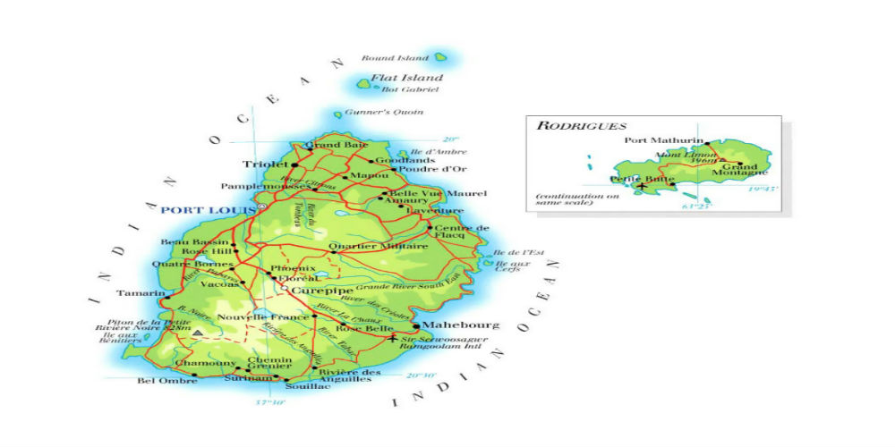

The Dodo is a lesson in extinction. Found by Dutch soldiers around 1600 on an island in the Indian Ocean, the Dodo became extinct less than 80 years later because of deforestation, hunting, and destruction of their nests by animals brought to the island by the Dutch. The Dodo may not always have been flightless. Dodos are related to pigeons, one group of which dispersed over water to Mauritius. There, presumably because of the lack of predators, the Dodo grew larger and became flightless.
| Kingdom | Animalia |
|---|---|
| Phylum | Chordata |
| Class | Aves |
| Order | Columbiformes |
| Family | Columbidae |
| Genus | Raphus |
| Species | Culcullatus |
| Latin Name | Didus ineptus |
|---|---|
| Movement | Flightless |
| Height | 3.3 Ft Tall |
| Weight | 22 to 40 lbs |
| Beak Length | 9 Inches |
| Diet | Seeds, Nuts, Bulbs, Fallen Fruit |
| Last Seen | 1662 |
The dodo bird was native to the island of Mauritius in the Indian Ocean. Although this flightless bird had no natural predators, Dutch settlers hunted it to extinction, and it disappeared in approximately 1662.Because there were no reptiles, mammals or other predators on Mauritius, dodos never developed natural defences. When settlers arrived, the dodos readily approached them and the animals they brought with them. In addition, dodos laid only one egg at a time. Their trusting nature and slow reproduction rates contributed to their extinction. Dodos evolved from pigeons that landed on the island; Nicobar pigeons are their closest living relatives.
